One app.
Not three.
Assign devices, tune axis curves, and configure Star Citizen bindings, all in one application instead of three.
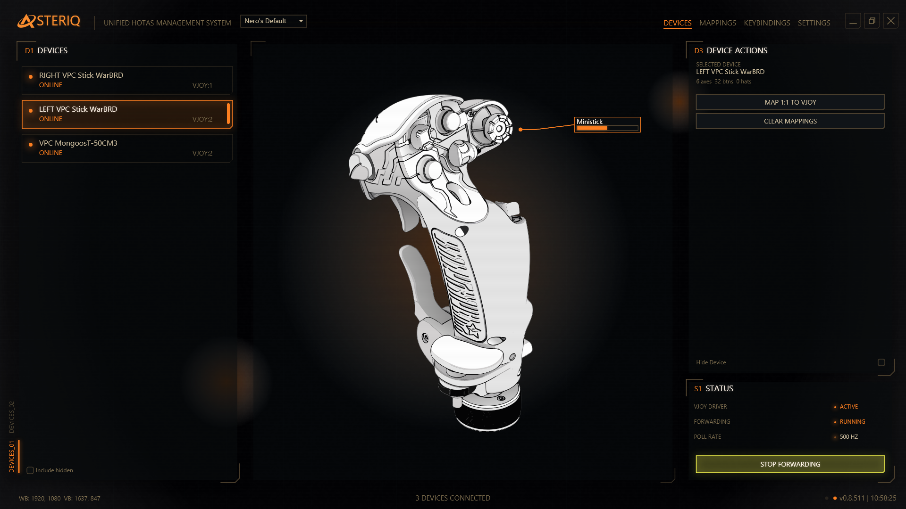
- Axis-to-button threshold mode. Turn an analogue slider into a key press at any position.
- Two new axis merge modes for split throttles: last-touched snap and smooth takeover.
- Action Definitions panel that tells you what each Star Citizen action actually does.
- Nightly release channel if you want the latest builds straight from the dev branch.
- One-click vJoy configuration sync between TX and RX machines.
- Create new vJoy devices from the Devices tab without needing physical hardware first.
Why Asteriq?
One Application
No more juggling between multiple applications. Asteriq handles device assignment, input mapping, device hiding, and SC binding export in a single window.
Stable Device Identity
Physical devices keep their identity across sessions. No more bindings shifting when you unplug a USB cable or reboot. Devices are tracked by hardware ID, not port order.
Safe SC Integration
Asteriq reads SC's action definitions and can import existing mapping files. Exports are written as actionmaps.xml to your SC user folder, with a prompt before overwriting.


Features
Device Management
All connected joysticks, throttles, and pedals are detected automatically. Each device shows its name, connection status, and vJoy slot assignment.
Disconnected devices remain in the list so your setup is preserved between sessions. Drag to reorder devices and control which vJoy slot each one maps to.
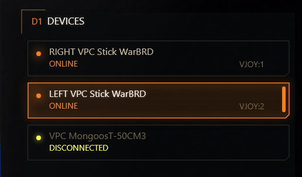
Axis Mapping & Curves
Shape your stick response with interactive curve editors. Choose from linear, S-curve, exponential presets, or drag control points for a fully custom response. Adjust deadzone per-axis with centre or throttle modes.
Multiple physical inputs can merge into one vJoy axis with six modes: average, minimum, maximum, sum, last-touched snap, or last-touched smooth takeover. The smooth takeover mode is great for split throttles. Whichever lever you moved most recently takes control, but only once it crosses the current value, so there's no jump.
You can also turn any axis into a button. Set above and below thresholds with hysteresis to fire a key or vJoy button when your slider passes a chosen position.
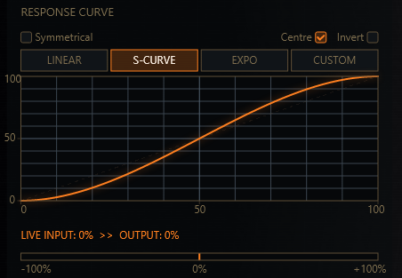
Star Citizen Bindings
A full binding grid shows every SC action alongside your keyboard, mouse, and joystick assignments. Click a cell and press a button to assign. Asteriq detects the input automatically.
Set activation modes (Press, Hold, Double Tap, Triple Tap, Delayed Press) per binding. Every action carries its display label, use cases, and raw action code, all pulled from SC's own localisation files, so you know exactly what you're binding. Import from other profiles or SC XML files. Export generates a clean actionmaps.xml for Star Citizen.
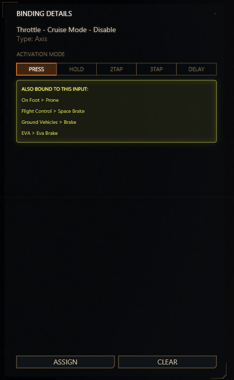
Visual Themes
Twelve colour themes inspired by Star Citizen manufacturers: Drake, Aegis, Anvil, Argo, Crusader, Origin, MISC, and RSI. Four core themes are also included: Midnight, Matrix, Amber, and Ice.
Fine-tune background effects: grid overlay, glow, film grain, scanlines, and vignette. All changes apply instantly.

Network Forwarding
Use your HOTAS on any machine on your network without disconnecting or re-connecting. The TX machine reads your physical devices and forwards vJoy state to whichever RX machine you select.
Automatic peer discovery finds machines on your network. Assign a physical button as a TX toggle to switch between machines from your stick. And when you're ready, the RX machine can clone the master's vJoy configuration in one click, so both ends have matching virtual hardware without you setting up vJoy twice.
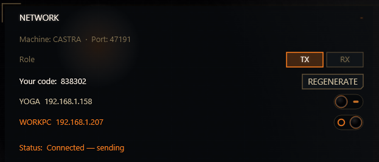
Getting Started
-
1
Download and install
Grab the MSI installer or portable ZIP from GitHub. No admin rights needed for the portable version.
-
2
Install drivers
On first launch, Asteriq checks for vJoy and HidHide. Follow the prompts to download and install. Both are optional but recommended.
-
3
Assign devices
Your sticks and throttles appear automatically. Drag to reorder, then use 1:1 Auto-Map for a quick passthrough setup.
-
4
Tune mappings
Open the Mappings tab to adjust curves, deadzone, and button modes. The live preview shows your physical input mapped through the response curve in real-time.
-
5
Export SC bindings
Switch to the SC Bindings tab, assign your actions, and click Export to SC. Load the exported profile in Star Citizen's keybind settings.
Support
Asteriq is free for personal use. If it saves you time or makes your HOTAS setup easier, consider supporting development.
Star Citizen referral code: STAR-MQHD-YNZK
Device Management
Enumerate, order, hide, and visualise all your connected HOTAS hardware. Interactive silhouettes show your exact device layout with labelled controls.
Device Enumeration
All connected joysticks, throttles, pedals, and gamepads are detected automatically via SDL2. Each device shows its name, hardware ID (VID:PID), and connection status with a live indicator.
Disconnected devices remain in the list so you don't lose your setup when unplugging for transport.
Interactive Silhouettes
SVG-based device silhouettes render your exact hardware layout. Hover over a control to highlight it; click to select it for quick binding in the Mappings tab.
Lead-lines connect each physical control to its label. Silhouettes mirror automatically for left-hand variants. Currently available for Virpil and VKB hardware, with generic placeholders for other devices.
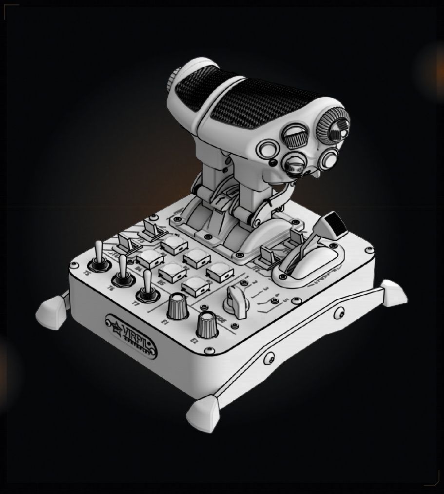
Live Input on Silhouettes
Silhouette lead-lines update in real-time as you interact with your hardware. Axis controls show a deflection bar, and buttons display their pressed or released state directly on the device image.
Useful for verifying hardware works correctly before creating mappings, or for identifying which physical control corresponds to which input.

Button Press Detection
When a button or hat is pressed, the corresponding lead-line on the silhouette highlights with a PRESSED indicator. This makes it easy to identify physical controls on unfamiliar hardware.
The Devices tab also provides quick actions: create 1:1 passthrough mappings, clear all mappings, remove disconnected devices, and toggle HidHide per device.
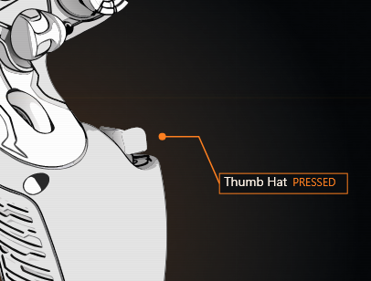
Create vJoy Devices
Spin up new vJoy devices directly from the Devices tab. You don't need physical hardware plugged in first. Pick the axes you want, set the button count, configure POV hats, and you're done.
Useful for building demo profiles, testing a layout before you order new hardware, or setting up a headless RX machine that only ever receives forwarded input over the network.
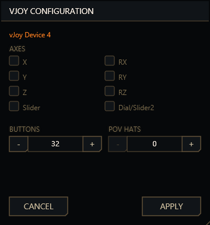
vJoy Configuration
Every vJoy device's layout is editable from inside Asteriq. Toggle individual axes (X, Y, Z, RX, RY, RZ, SL0, SL1) on or off, choose how many buttons the device exposes, and configure POV hats as continuous or discrete.
Pick a silhouette from the device library so your virtual device looks the part too. No need to open the vJoy Configurator separately.
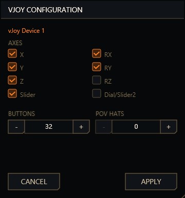
More Details
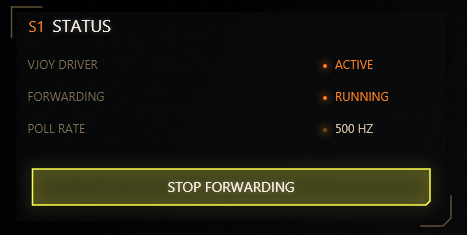
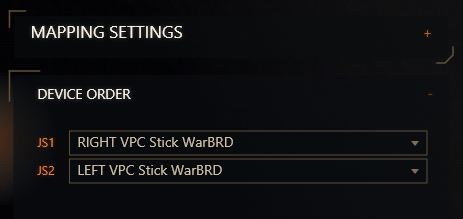
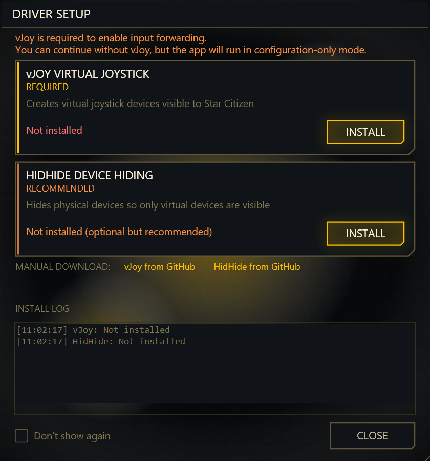
Mappings & Curves
Define how physical inputs translate to vJoy outputs. Shape axis response with interactive curves, set deadzone, configure button modes, and merge multiple inputs into one output.
Response Curves
Shape your stick response with four curve types. Linear for raw passthrough, S-curve for precision in the centre with faster edges, exponential for responsiveness, or custom with draggable control points.
A live preview shows your physical axis movement mapped through the curve in real-time, so you can feel the difference immediately.
Deadzone Control
Eliminate stick drift with precise deadzone adjustment. Centre mode creates a symmetric deadzone around the neutral point, which is ideal for joysticks. Throttle mode supports asymmetric deadzone for one-directional controls.
Drag the handles directly on the slider, or use preset buttons (0%, 2%, 5%, 10%) for quick adjustment. Supports axis inversion.
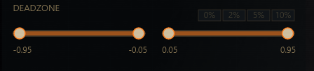
Axis-to-Button Threshold
Turn an axis into a button. Set above and below thresholds with hysteresis to fire a keyboard key or vJoy button when your slider passes a chosen position. Useful for detents, warning-zone triggers, or wing-fold commands tied to a throttle lever.
Both directions fire independently, each with its own threshold, hysteresis, and output binding. The hysteresis stops the button from chattering when your slider sits right on the edge.
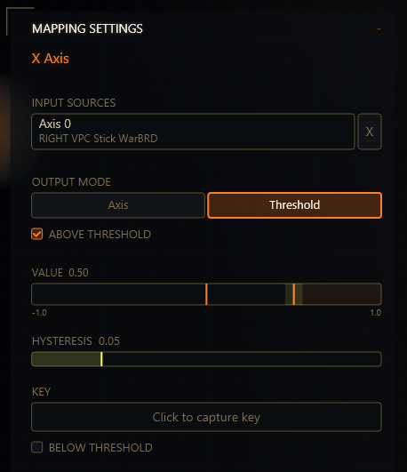
Axis Merge
Combine multiple physical axes into one vJoy output with six modes: average, minimum, maximum, sum, last-touched snap, or last-touched smooth takeover.
Smooth takeover is ideal for split throttles. Whichever lever you moved most recently gains control, but only after it crosses the current position, so there's no jump when you hand off.
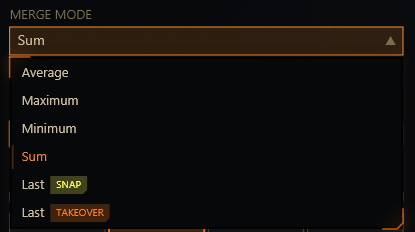
Button Modes
Four output modes for button mappings:
- Normal: output mirrors input (pressed while held)
- Toggle: each press flips state (on/off)
- Pulse: brief activation on press (100 to 1000 ms)
- Hold-to-Activate: only fires after holding for a duration (200 to 2000 ms)
Duration sliders let you fine-tune pulse and hold timing.
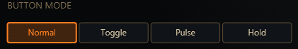
Keyboard Output
Map any physical button to a keyboard key with full modifier support. Press the key you want to bind and Asteriq detects it automatically, including Ctrl, Shift, Alt, and AltGr combinations.
Useful for mapping HOTAS buttons to keyboard shortcuts in games that don't support joystick input natively.
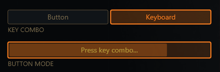
Mapping List
The left panel lists all mappings for the selected vJoy device, with M1 (Buttons) and M2 (Axes) category tabs. Each row shows the mapped output, any assigned modifiers, and a status pill if something on another tab is touching the same output.
Rows with active modifier keys display the modifier name alongside the button number. Use the vJoy device arrows at the top to switch between virtual devices.
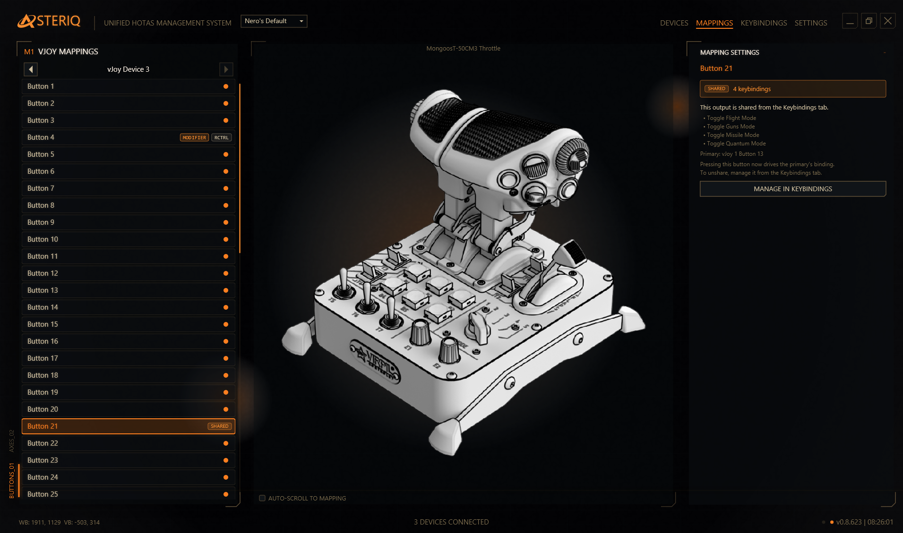
Output Status at a Glance
Asteriq tells you when a mapping's output isn't doing what it looks like. Rows that share an output with a Star Citizen binding show a SHARED pill, with a one-click jump to the Keybindings tab so you can see the other side of the conflict.
Axis rows whose input has been claimed by a merge on another vJoy slot show a MERGED pill instead, with a direct link to the row that owns the merged output. No more wondering where your axis went.
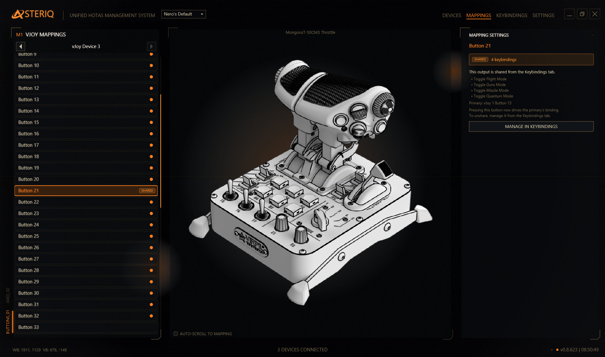
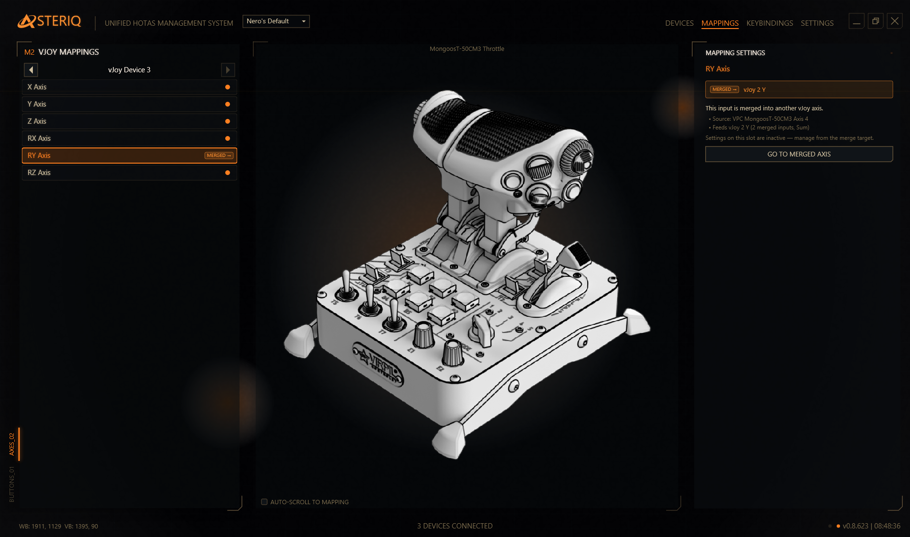
Star Citizen Bindings
A complete binding grid for every SC action. Assign inputs by pressing buttons, set activation modes, resolve conflicts, and export a clean actionmaps.xml.
Binding Grid
Every Star Citizen action displayed in a scrollable grid with columns for keyboard, mouse, and each joystick device. Actions are organised by category (Flight, Weapons, Vehicle, etc.) with collapsible headers.
Search by action name, filter by category, or toggle "Bound only" to see just your assigned bindings.
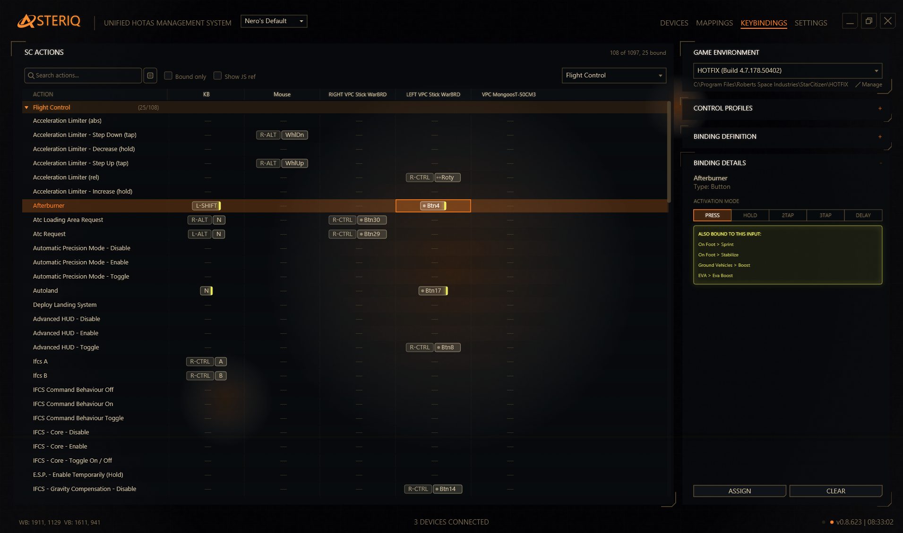
Action Definitions
Every Star Citizen action carries its display label and use-case description, pulled straight from SC's own localisation files. Selecting an action opens a Binding Definition panel that explains what the action does, when it's useful, and shows the raw action code for cross-reference with community guides.
No more guessing what v_target_cycle_friendly_back means before you bind it.
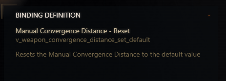
Binding Details & Activation Modes
Select any cell to open the Binding Details panel. See action info, current binding, and set the activation mode with a segmented control:
- Press: standard press/release (default)
- Hold: hold button to activate
- Double Tap: tap twice quickly
- Triple Tap: tap three times
- Delayed Press: long press to activate
Activation modes are stored per-binding and exported to SC's XML format.
Game Environment & Libraries
Select your Star Citizen environment (LIVE, PTU, EPTU, and so on) from the right panel. Asteriq auto-detects standard install locations and reads bindings from the matching profile so you can build separate layouts per environment.
For installs the RSI launcher doesn't expose in its store, the Manage Libraries dialog lets you register additional library paths by hand. Custom paths persist across sessions.
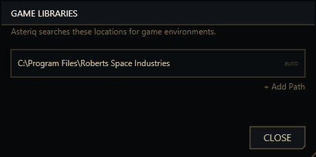
Column Import
Click a joystick column header to open Column Actions. Import bindings from another saved Asteriq profile or from a Star Citizen XML file. Select the source profile and column, then import.
Useful for copying a known-good layout between profiles or migrating from an existing SC setup.
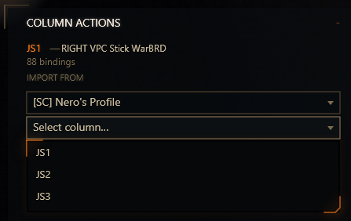
Conflict Detection
Asteriq highlights binding conflicts in real-time across every input type: joystick, keyboard, and mouse. Amber cells flag shared bindings (allowed but worth knowing about). Red cells block export until you fix them.
Click a conflict cell to see all affected actions with navigation links. Jump directly to the conflicting binding to resolve it without hunting through the grid.
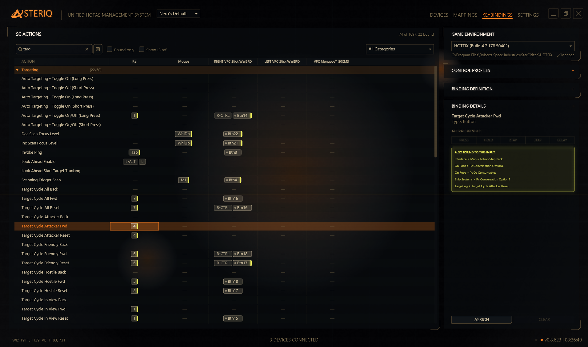
Search & Button Capture
Type to search actions by name. Button capture mode listens on any device, whether that's a joystick, your keyboard, or your mouse (wheel and AltGr+Mouse combos included), and filters the grid to only the actions bound to that exact input.
Press the key or button you want to find and Asteriq narrows the grid down for you. Combined with the "Bound only" toggle and category filter, you can find any binding in a list of 1000+ SC actions in a few seconds.
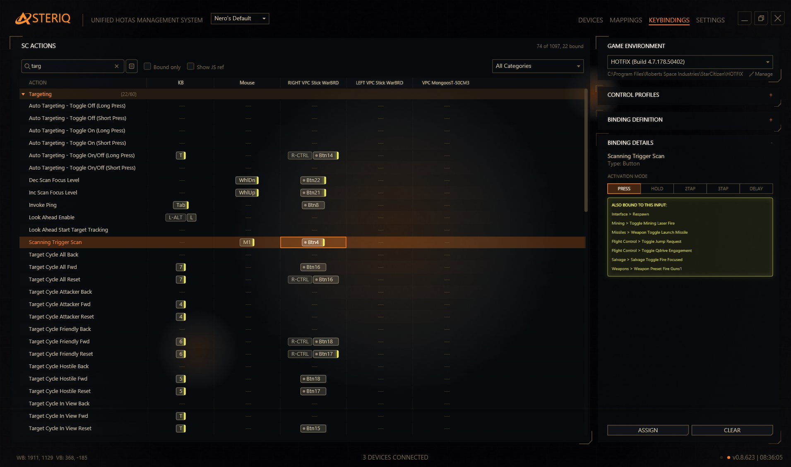
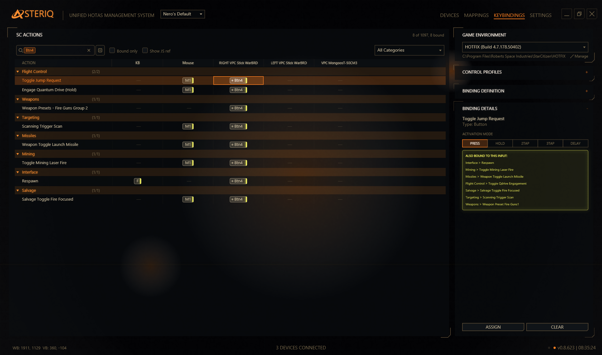
More Details
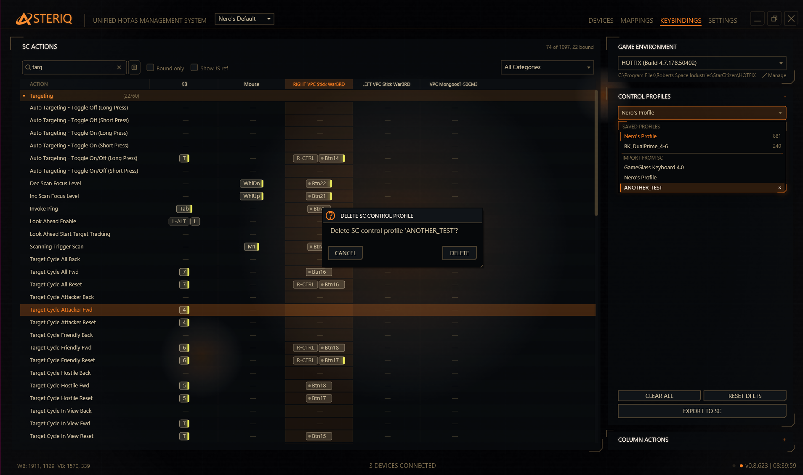
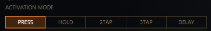
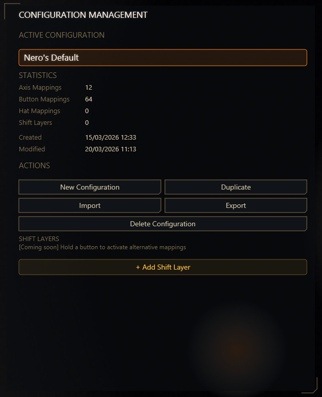
Settings & Configuration
Profiles, visual themes, network forwarding, driver management, and auto-updates. Customise every aspect of Asteriq to suit your setup.
Configuration Management
Create, duplicate, import, and export configurations as JSON files. Share your complete HOTAS setup with teammates. All mappings, curves, SC bindings, and device order are included.
The panel shows your active configuration name, mapping statistics, and creation/modification dates.
Colour Themes
Twelve colour themes inspired by Star Citizen manufacturers: Drake (default), Aegis, Anvil, Argo, Crusader, Origin, MISC, and RSI. Four core themes are also included: Midnight, Matrix, Amber, and Ice.
Each theme changes accent colours, borders, and status indicators across the entire UI. Click to apply instantly.
Background Effects
Fine-tune the visual atmosphere with five adjustable background effects:
- Grid: subtle grid pattern overlay
- Glow: bloom on active UI elements
- Noise: film grain texture
- Scanline: horizontal CRT-style lines
- Vignette: edge darkening for focus
All sliders update in real-time with instant visual feedback.
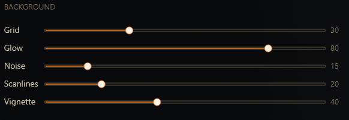
Network Forwarding: TX Mode
Keep your HOTAS connected to one machine and use it on any other computer on your network. The TX machine reads your physical devices and forwards the vJoy state to whichever RX machine you choose.
No disconnecting or re-connecting needed. Per-peer toggle switches let you select which machine receives input. Assign a physical HOTAS button as a TX Toggle to switch between machines without touching the keyboard.
Network Forwarding: RX Mode
The client (RX) machine receives vJoy snapshots from the master. Once a trusted master is found on the network, the connection is established automatically. Your local vJoy devices then mirror the master's output.
Devices and Mappings tabs lock to read-only while connected, preventing accidental changes. Use the Disconnect button to regain local control.
Need matching virtual hardware on both ends? The Match Master vJoy Config button clones the master's vJoy layout to your local machine in one click. Asteriq provisions the devices for you and shows progress as it goes, so you don't have to set vJoy up twice.
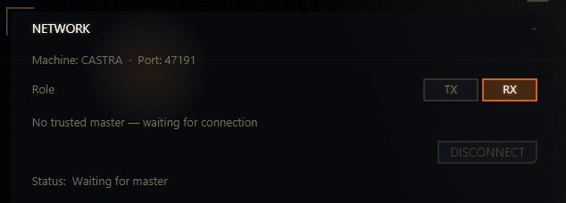
Auto-Updates
Asteriq checks for updates automatically on startup. When a new version is available, download and apply it with two clicks. The app extracts, swaps, and relaunches without manual intervention.
Toggle auto-check on or off, switch between Stable and Nightly channels, or trigger a manual check any time. Stable is the standard release rhythm. Nightly tracks the latest green build on the dev branch for anyone who wants new features as soon as they land.
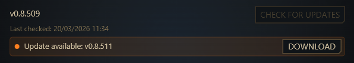
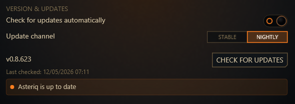
Launch Behaviour
Three toggles control how Asteriq starts. Launch at Login adds Asteriq to Windows autostart. Auto-Forward on Start switches network forwarding on the moment the app launches, which is useful for headless TX machines. Open Minimised starts the app straight into the system tray.
Pair these with TX mode and you've got a "set it and forget it" forwarding box that's ready after every reboot without you touching anything.
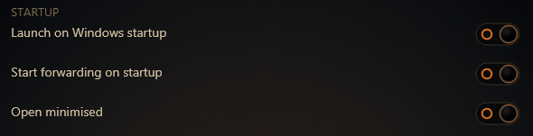
More Details
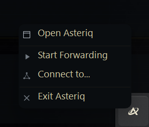
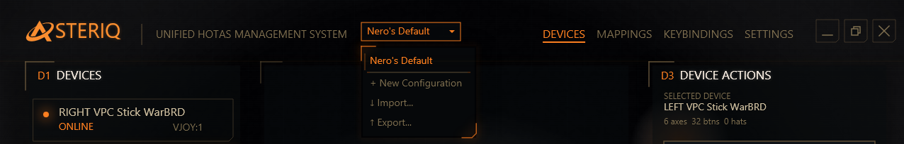